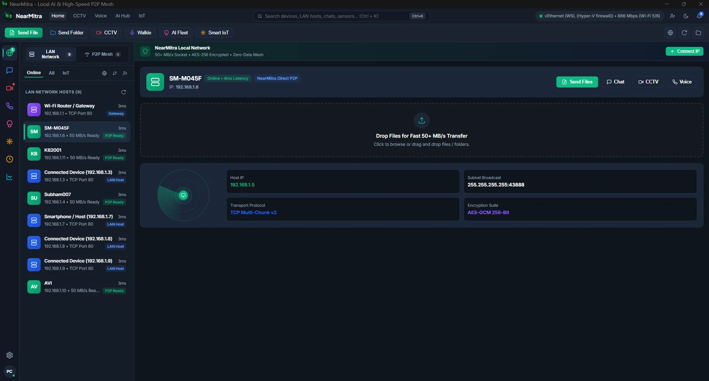
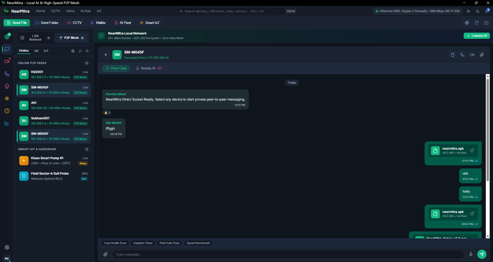

NEARMITRA FOR WINDOWS
Your desktop.
Better connected.
One workspace for your nearby devices. Move a folder, answer a message, view an approved camera stream or share the AI engine running on your PC.

MADE FOR THE BIG SCREEN
Less switching.
More doing.
From phone to PC. Just send it.
Share files and folders through a direct local connection, with progress visible in your conversation.
ExploreYour computer. Your AI engine.
Let an approved nearby device query an AI engine you have configured, including Ollama on Windows.
ExploreMore ways to be there.
Make voice and video calls, view an approved camera stream, or send PC audio to your phone.
ExploreSTAYS WITH YOUR WORKFLOW
Here when you need it.
In the tray when you don’t.
Keep the native Go desktop app running in the Windows system tray. Chat and transfers remain part of the same workspace as device discovery.
- File and folder sharing with transfer progress
- Native file picking and Explorer integration
- Nearby-first routing, configured WAN as a fallback
- Optional startup and private-network firewall setup

SET UP YOUR WORKSPACE
A straightforward start.
- 01
Get the Windows build
Check GitHub Releases for an available installer or build locally with Go and the documented installer script.
- 02
Connect to your phone
Keep both apps on a reachable LAN. Allow Windows private-network firewall access when you choose to enable local discovery.
- 03
Approve what you share
Start with chat and a small file. Enable camera, audio or AI sharing only for devices you intend to allow.
READY FOR YOUR DESKTOP?
Bring your devices together.
YOUR NEXT CONNECTION STARTS HERE.
Bring your devices
a little closer.
For Android & Windows. Built in the open.